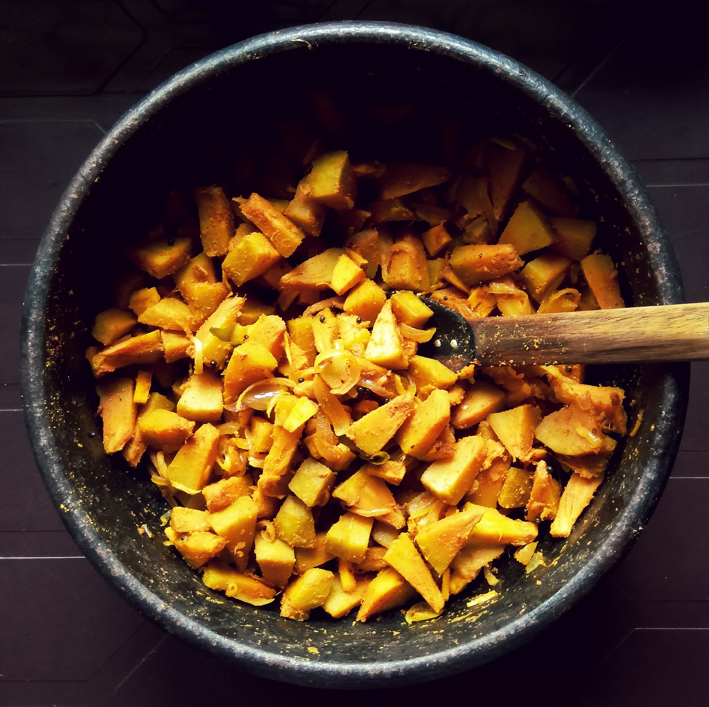

Platos populares
Tikka Masala
Entre los platos más populares de la India destaca el pollo tikka masala. Pero, ¿Qué es el pollo tikka? Es delicioso pollo deshuesado, marinado en especias y yogur y asado en un horno tandoor. Además, lleva salsa de tomate o leche de coco y nata. Lo sirven acompañado, habitualmente, por un sabroso arroz especiado conocido como pilau o pilaf. Se cree es originario de Punyab y su exótico sabor ha enamorado a los paladares de todo el mundo y viene causando furor en los restaurantes de cocina india en España. Anímate y pruébalo, ¡te conquistará!

Pollo Tandoori
Lo preparan utilizando pollo troceado, sin deshuesar y sin piel, que se macera en una fantástica mezcla de especias y yogur hasta que adquiere ese sabor exótico que nos encanta. Finalmente, se hornea en un horno taandor. Lo sirven con una guarnición de arroz pilau o pilaf, y queda genial acompañado de un pan especial con frutos secos que, muchas veces, los restaurantes indios también envían con este plato. Pídelo a domicilio, recíbelo cómodamente y ¡déjate sorprender por su color, su textura y su increíble sabor!
El Tandoori masala consiste en una mezcla de especias característica de la cocina india y pakistaní.
Tiene un intenso color rojo, que se transfiere a los alimentos con los que se cocina, dándoles un toque
muy exótico además de un agradable perfume especiado.


El Tandoori masala consiste en una mezcla de especias característica de la cocina india y pakistaní.
Tiene un intenso color rojo, que se transfiere a los alimentos con los que se cocina, dándoles un toque
muy exótico además de un agradable perfume especiado.